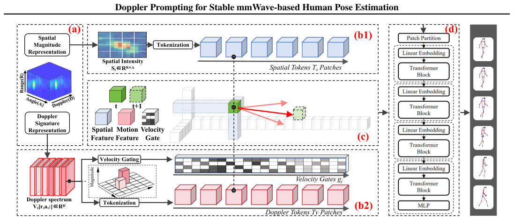

Doppler Prompting for Stable mmWave-based Human Pose Estimation
把 Doppler 当作「过滤后的运动 prompt」单向注入到空间分支的注意力中，让单帧 mmWave 姿态预测稳过多帧基线。
关键贡献
- 把 Doppler 从「对称特征」改成「被筛过的单向运动 prompt」——避免杂波被当成人体运动
- 通过局部邻域约束 + 置信度门控的 cross-attention，单帧版稳定性超过多帧 baseline
- 在 HuPR/XRF55/mmRadPose 三个数据集上 MPJVE 一致下降 16-28%，且不需要任何时序平滑
解读
背景与问题：mmWave 雷达做人体姿态估计 (HPE) 在隐私和光照鲁棒性上有天然优势——每帧 mmWave 数据是一个 range-angle-Doppler 张量 H_t ∈ ℝ^{R×A×D}，空间幅度 (R,A) 给定位、Doppler 谱 D 给瞬时运动。但下游应用如跌倒检测、康复跟踪要求逐帧准确 + 时序稳定，而当前 mmWave HPE 输出的姿态序列经常抖（jittery），把好预测拖累成不可用。
现有方案的不足：作者归纳出 3 类做法各有缺陷：(1) 忽视 Doppler——只用空间幅度做点云/强度图，缺运动线索约束帧间一致性；(2) 朴素融合——直接 concat 空间和 Doppler 特征，但 Doppler 里杂波、多径、硬件伪影的「假运动」被等同对待，反而注入噪声；(3) 多帧聚合——靠时间窗滑动平滑，但对测试时序连续性有强假设，且本质没解决「局部 Doppler 不可靠」问题。
核心方法（PULSE）：作者重新定义 Doppler 不是对称特征通道，而是被「筛过」的运动 prompt——一个 reliability-gated 的「可疑提示」，只在可信时影响空间推理。pipeline 含 3 个模块：
1. 双域表征：空间 S_t[r,a] = (1/D)Σ_d|H_t[r,a,d]| 沿 Doppler 平均；Doppler 谱 v_{t,r,a} = V_t[r,a,:] 逐 cell 保留。
2. 运动置信门：每个 Doppler token 给一个 g_{t,j} = σ(f_g(t^v_{t,j})) ∈ [0,1] 的可信度，端到端学到。
3. 条件 cross-attention：把 g_{t,j} 加进 attention 的 logit α_{ij} ∝ exp((t^s_i W_Q)(t^v_{t,j} W_K)^⊤/√d_k + βg_{t,j})，且 key/value 只取 (r,a) 局部邻域 N(i) 内的 Doppler token——把跨区域谱泄漏挡掉。最后用残差 t̃^s_i = t^s_i + λ_i c_i 注入空间分支。多帧扩展只是把不同时刻的 Doppler token 用 g^{(τ)}_j 加权聚合，不动空间骨干。

实验设置：3 个公开数据集 (HuPR / XRF55 / mmRadPose，覆盖单人/多人/不同雷达)；对比 5 个 baseline 含单帧 HuPRModel / MvDoppler / RETR、多帧 mmDiff / milliMamba；4 个指标 MPJPE / PA-MPJPE / MPJVE（速度误差）/ AKV（关键点速度幅值）。多帧统一用 K=9 窗口。
关键结果：在 HuPR 上 PULSE 单帧 (1F) MPJVE=9.78 vs 多帧 mmDiff 13.60（↓28%）和 milliMamba 11.69（↓16%）；MPJPE=60.57 比所有单/多帧 baseline 都低；PULSE 多帧 (KF) 进一步降到 MPJVE=8.16。XRF55 和 mmRadPose 上结论一致：单帧 PULSE 已超过多帧 baseline 的稳定性。多人评测 (XRF55) 也保持优势。
局限与可推广性：依赖完整 RAD 张量做输入（部分 4D 雷达数据集不适用）；置信门是从监督信号学到的「先验」而非校准过的信号质量；论文未做实时性 / 端侧推理开销的系统级评估。
原始摘要
Millimeter-wave (mmWave) enables privacy-preserving, illumination-robust human pose estimation (HPE), with each mmWave frame represented as a range-angle-Doppler tensor, providing spatial magnitude for localization and Doppler signatures for motion-related cues. However, existing mmWave-based HPE methods either underutilize or naïvely fuse Doppler signatures with spatial magnitude, disregarding their distinct physical semantics. As a result, non-human Doppler signatures can be misinterpreted as human motion cues, leading to jittery trajectories. We propose PULSE, which converts Doppler signatures into confidence-aware motion prompts and injects them into spatial magnitude reasoning through constrained interactions. By screening Doppler prompts before they influence prediction, PULSE first suppresses spurious spectral motion cues and then uses the screened prompts to stabilize prediction.